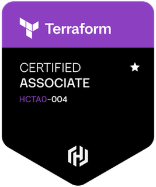
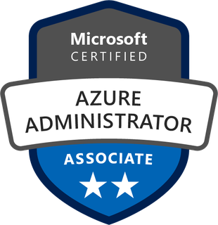
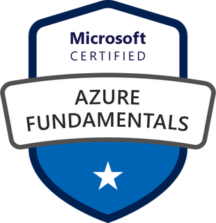
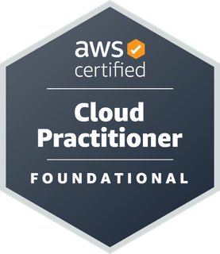
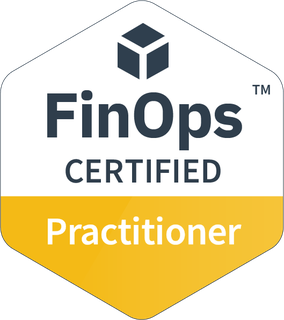
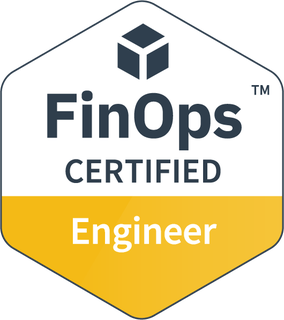
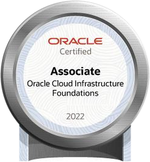

FinOps
Análise de custos, rightsizing, reservas e caça a desperdícios, com automações que cruzam consumo e custo para medir o saving real.
> cloud engineer · multicloud
Nuvem governada, automatizada e eficiente.▌
Atuo na interseção entre infraestrutura, automação e custos em ambientes Azure, AWS, GCP e OCI. Hoje estou aprofundando em IaC com Terraform e GitHub Actions.
01 · sobre
Profissional de Cloud com mais de 8 anos em TI, 3 deles dedicados a ambientes multicloud. Meu trabalho é deixar a nuvem governada, automatizada e financeiramente eficiente: menos desperdício, mais rastreabilidade e processos que rodam sozinhos.
Comecei no suporte técnico, passei para a sustentação de ambientes cloud e hoje combino FinOps, governança e DevOps no dia a dia. A ferramenta de gestão de custos que desenvolvi foi vencedora do campeonato interno de tecnologia da empresa. 🏆
02 · atuação
Análise de custos, rightsizing, reservas e caça a desperdícios, com automações que cruzam consumo e custo para medir o saving real.
TAGs obrigatórias para showback, Azure Policy para manter o ambiente em conformidade, RBAC e hierarquia de Management Groups.
Pipelines CI/CD com SonarQube e Gitleaks, automação com GitHub Actions, Argo CD e AKS.
Terraform com módulos reutilizáveis, Git e GitHub no fluxo de trabalho e deploy com OIDC, sem segredo guardado no pipeline.
03 · projetos
Plataforma de venda de ingressos provisionada inteira com Terraform no Azure, distribuída em duas regiões. Validada de ponta a ponta: acesso HTTPS, cadastro de usuário e compra de ingresso.
Script em PowerShell e Azure CLI que lê uma planilha CSV e aplica TAGs em Resource Groups, cria Policy Assignments de herança de TAGs e executa as remediações, em várias assinaturas de uma vez.
Ver no GitHubPainel que acompanha recomendações de otimização do início ao fim e calcula o saving efetivo com base no custo real diário, antes e depois de cada ação. Deploy contínuo com GitHub Actions.
Repositório privadoSite estático em HTML, CSS e JavaScript, sem framework, publicado com GitHub Pages a cada push na branch principal.
Ver no GitHub04 · certificações







05 · experiência